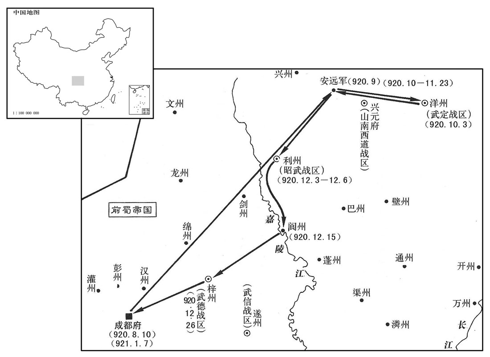
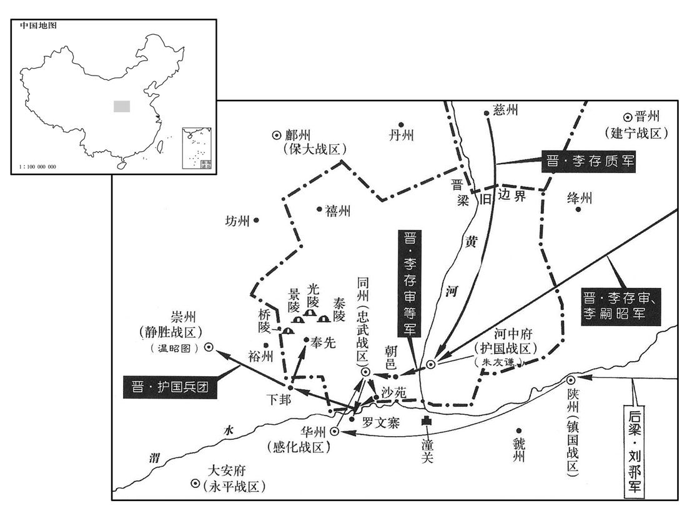
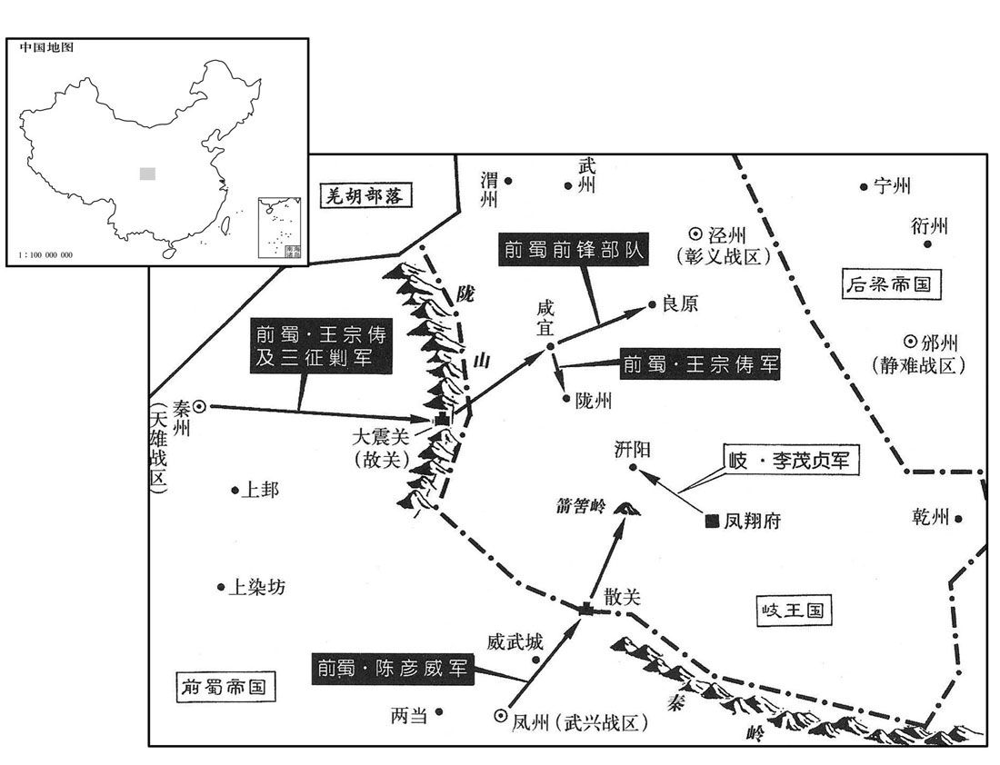

公元920年资治通鉴：本年记事、原文与白话对照
按原书编年位置阅读；追叙和史论不等于本年发生的事件。白话采用所据译本，缺译不以生成译文补齐。
卷271 · 本年记事
公元920年 · 后梁均王贞明六年
六年〔（庚辰、九二○）〕
上传原文的注释括号有异常，字符原样保留；无法可靠划分的段落默认全文显示。
本年事件索引（现代整理）
- 桑弘志攻克金州擒获全师朗，王衍赦免其罪
- 杨廷式坚持查办张崇及受贿县令，徐知诰因此敬重他
- 吴将张崇攻安州未克而还
- 李建及任魏博内外牙都将后受谗被免军职，改任代州刺史
- 南汉采纳杨洞潜建议兴办学校、开科举并设置选官制度
- 梁廷任李琪为中书侍郎同平章事，后因任官徇私被罢相
- 朱友谦攻取同州并逐走梁将程全晖，随后分别向梁晋求援
- 杨隆演为人厚重恭谨，徐温专权后渐渐沉郁成疾
- 徐温拒绝旁人劝其代杨氏自立，迎杨溥监国并调杨蒙出任舒州
- 杨隆演去世，杨溥继位为吴王
- 前蜀任周庠为永平节度使
- 梁廷命刘鄩等围攻同州，朱友谦向晋求援
- 王衍建高祖原庙并以亵味鼓吹祭祀，张士乔进谏后愤而投水
- 刘鄩等围攻同州，晋王派李存审等率军救援
- 王衍发布北巡诏令并宠信韩昭，韩昭借机卖官
- 王衍披甲执弓率百里旌旗从成都出巡，不听段融劝谏
- 李存审等抵达河中后渡河驻朝邑，刘鄩不敢轻出
- 河中将士面对晋梁交战仍持两端，朱友谦拒绝背弃李存勖
- 晋军攻破华州外城并击败刘鄩，追击后祭拜唐帝陵
- 温昭图担心河中军攻打崇州，听窦维建议请求移镇
- 王衍赴武定军后数日即返回安远城
- 王衍命王宗俦等率军攻岐，因军粮不足而退驻多处
- 王衍自安远出发赴梓州，史官讥评其纵欲夺人妇女
- 王镕晚年沉溺享乐，不再亲理政务，权力交给李蔼、李弘规等人
- 张文礼趁刘守文赴幽州省父时据沧州叛乱，后投赵王并改名张德明
- 王镕沉迷佛道斋醮和西山游赏，听信石希蒙谗言后杀李弘规等数十人
- 徐温视察金陵城后命人焚毁陈彦谦提交的开支册籍
- 王审知因白鹿紫芝符瑞而罢黜骄纵求节镇的侄子王延彬
- 刘岩遣使与前蜀通好
- 钱镠遣使为子钱传琇向楚王马殷求婚，马殷答应

本年形势与背景参考图

本年形势与背景参考图

本年形势与背景参考图
春，正月，戊辰，蜀桑弘志克金州，执全师朗，献于成都，蜀主释之。
春季，正月，戊辰（初五），前蜀将领桑弘志攻克金州，抓获全师朗，送到成都，前蜀主把他释放了。
崇在庐州，贪暴不法。庐江民讼县今受赇，徐知诰遣侍御史知杂事杨廷式往按之，欲以威崇，廷式曰：「杂端推事，其体至重，〔唐御史台侍御史六人，以久次一人知杂事，谓之杂端。〕职业不可不行。」知诰曰：「何如﹖」廷式曰：「械系张崇，使吏如升州，簿责都统。」〔簿责者，一二而责之。〕知诰曰：「所按者县今耳，何至于是！」廷式曰；「县今微官，张崇使之取民财转敌都统耳，〔都统，谓徐温也。〕岂可舍大而诘小乎！」〔诘，去吉翻。〕知诰谢之曰：「固知小事不足相烦。」〔烦，劳也。〕以是益重之。廷式，泉州人也。
张崇在庐州，贪暴不法。庐江的百姓上诉，说庐江县令接受了贿赂。徐知诰派侍御史知杂事杨廷式前往检查，打算以此来威胁张崇一下。杨廷式说：“杂端推事官，体制上非常重要，本职工作，不可不做。”徐知诰说；“怎么办呢？”杨廷式说：“给张崇戴上刑具，派一个官吏去升州，反复诘责都统。”徐知诰说：“现在查办的不过是一个县令，何至如此！”杨廷式说：“县令虽然是个小官，但张崇让他收取的民财都转献给了都统，难道可以舍去大官而去诘责一个小官吗？”徐知诰道歉说：“本来知道小事不足以麻烦你。”徐知诰因此更加器重杨廷式。杨廷式是泉州人。
吴张崇攻安州，不克而还。
吴将张崇进攻安州，没有攻下，率兵返回。
晋王自得魏州，〔得魏州见二百六十九卷元年。〕以李建及为魏博内外牙都将，将，银枪效节都。〔将，即亮翻；下同。〕建及为人忠壮，所得赏赐，悉分士卒，与同甘苦，故能得其死力，所向立功，同列疾之。宦者韦令图监建及军，谮于晋王曰：「建及以私财骤施，〔施，式豉翻。〕，此其志不小，不可使将牙兵。」王疑之；建及知之，〔【章：十二行本「之」下有「自恃无他」四字；乙十一行本同；孔本同；张校同；退斋校同。】〕行之自若。三月，王罢建及军职，以为代州刺史。〔史言晋王不能信属贤将，李建及由是怏怏而卒。〕
自从晋得到魏州以后，任命李建及为魏博内外牙都将，统率禁卫军银枪效节都。李建及为人忠诚壮节，得到的赏赐全部分给士卒，与士卒们同甘共苦，所以能够得到士卒们对他尽心尽力，只要他出去作战，一定会立功，同僚们很嫉妒他。宦官韦令图监管李建及的军队，偷偷地对晋王说：“李建及用自己的财物多次分给士卒，如此看来，他的志向不小，不能让他率领禁卫军了。”晋王产生了怀疑。李建及知道后，行之自若。三月，晋王免去李建及的军职，任命他为代州刺史。
汉杨洞潜请立学校，开贡举，设铨选；汉主岩从之。〔校，户教翻。〕
南汉杨洞潜请求建立学校，开设贡举，量才授官，南汉主刘岩听从了他的意见。
夏，四月，乙亥，以尚书左丞李琪为中书侍郎、同平章事。琪，珽之弟也，〔李珽始见于唐昭宗天复三年而死梁诛友珪之时。〕性疏俊，挟赵岩、张汉杰之势，颇通贿赂。萧顷与琪同为相，顷谨密而阴匼琪短。〔伺，相吏翻。〕久之，有以摄官求仕者，琪辄改摄为守。顷奏之。〔欧史曰：琪所私吏当得试官，琪改试为守，为顷所发。〕帝大怒，欲流琪远，方赵、张左右之，〔左右，读曰「佐佑」。〕止罢为太子少保。〔考异曰：薛史止有琪作相月日，无罢相年月，故终言之。〕
夏季，四月，乙亥（疑误），后梁帝任命尚书左丞李琪为中书侍郎、同平章事。李琪是李的弟弟，他的性情开朗出众，依仗赵岩、张汉杰的势力，颇通贿赂。萧顷和李琪同为宰相，萧顷谨慎秘密地观察李琪的短处。过了很久，有人想将试用的官改为正式的官，李琪就给他改试用官为守官，萧顷把这件事上奏给后梁帝。后梁帝十分生气，想把李琪流放到远方，经赵岩、张汉杰帮助，才未流放，降为太子少保。
河中节度使冀王友谦以兵袭取同州，逐忠武节度使程全晖，全晖奔大梁。右諆以其子令德为忠武留后，表求节钺，帝怒，不许。既而惧友諆怨望，己酉，以有谦兼忠武节度使。制下，〔下，户嫁翻。〕友谦已求节钺于晋王，〔朱有谦自此遂归于晋。〕晋王以墨制除令德忠武节度使。〔考异曰：庄宗列传，「上令幕客王正言送节旄赐之。」庄宗实录列传、薛史友谦传皆云「右谦以令德为帅，请节钺，不许。」薛史末帝纪贞明六年云，「陷同州，令德为留后，表求节旄，不允。」而「贞明四年六月甲辰，以歙州刺史朱令德忠武留后。」恐是四年已陷同州。〕
河中节度使冀王朱友谦率兵袭击并夺取了同州，赶走了忠武节度使程全晖。程全晖逃到了大梁。朱友谦任命他的儿子朱令德为忠武留后，并上表皇帝请求赐发符节和斧钺，后梁帝十分生气，没有答应。后来后梁帝害怕朱友谦心怀不满，己酉（十七日），任命朱友谦兼任忠武节度使。后梁帝的命令下达时，朱友谦已向晋王请求到符节和斧钺，归降于晋王，于是晋王直接发出亲笔手令任命朱令德为忠武节度使。
吴宣王重厚恭恪，徐温父子专政，王未尝有不平之意形于言色，温以是安之。及建国称制，〔见上卷上年。〕尤非所乐，多沈饮鲜食，〔乐，音洛。沈，持林翻。鲜，息浅翻，少也。〕遂寝疾。
吴宣王很厚道，而且谦恭谨慎，徐温父子掌管全权，宣王从来没有不平之意表现在脸色上，徐温因此就安然自在。到了建国称王以后，宣王更没有什么所高兴的，经常喝酒，很少吃饭，慢慢就卧床生病了。
五月，温自金陵入朝，议当为嗣者。或希温意言曰：「蜀先主谓武侯：『嗣子不才，君宜自取。』」〔见六十九卷魏文帝黄初三年。〕温正色曰：「吾果有意取之，当在诛张颢之初，〔诛张颢见二百六十九卷开平二年。〕岂至今日邪！使杨氏无男，有女亦当立之。敢妄言者斩！」乃以王命迎丹杨公溥监国，〔考异曰：吴录、九国志，「有女当立」之语在诛张颢时，今从薛史。十国纪年：「王疾病，大丞相温来朝，议立嗣君。门下侍郎严可求言王诸子皆不才，引蜀先主顾命诸葛亮事，温以告知诰，知诰曰：『可求多知，言未必诚，不过顺大人意尔。』温曰：『吾若自取，非止今日。张颢之乱，嗣王幼弱，政在吾手，取之易于反掌。然思太祖大渐，欲传位刘威，吾独力争，太祖垂泣，以后事托我，安可忘也！』乃与内枢密使王令谋定策，称隆演命，迎丹杨公溥监国。己丑，降演卒。六月，戊申，溥即王位。」恐可求亦不应有此言。今从薛史。〕徙溥兄蒙为舒州团练使。〔越蒙而立溥者，蒙为徐温所忌也。〕
五月，徐温从金陵回朝，商议谁当为继承王位的人。有人迎合徐温的心意说：“蜀先主刘备对武侯说：‘嗣子没有才能，您可以自代王位。’”徐温严肃地说：“我如果真有心取代王位，是在杀掉张颢的时候，哪能等到今日！即使杨氏没有儿子，有女儿也应当立她为王。再有敢胡说的，一律杀掉。”于是以宣王之命迎接丹杨公杨溥回来代行处理政事，调杨溥的哥哥杨任舒州团练使。
己丑，宣王殂。〔年二十四。〕六月，戊申，溥即吴王位，〔溥，杨行密第四子。〕尊母王氏白太妃。
己丑（二十八日），宣王去世。六月，戊申（十八日），杨溥登吴王位。尊称他的母亲王氏为太妃。
丁巳，蜀以司徒兼门下侍郎、同平章事周庠同平章事，充永平节度使。〔唐末置之平军于邛州。邵史职考，蜀以雅州为永平节度。〕
丁巳（二十七日），前蜀主让司徒兼门下侍郎、同平章事周以同平章事衔，出任永平节度使。
帝以泰宁节度使刘鄩为河东道招讨使，帅感化节度使尹皓、静胜节度使温昭图、庄宅使段凝攻同州。〔帅，读曰率；下同。〕
后梁帝任命泰宁节度刘为河东道招讨使，率领感化节度使尹皓、静胜节度使温昭图、庄宅使段凝一起攻打同州。
闰月，庚申朔，蜀主作高祖原庙于万里桥，〔原庙起于汉。原，再也，已立太庙而再立庙曰原庙。万里桥在成都。还宇记曰：昔者费祎聘吴，诸葛亮送之至此桥，曰：「万里之路，始于此矣。」因以名桥。〕帅后妃、百官用亵味作鼓吹祭之。〔亵味，常御嗜好之味也。记郊特性曰：禘尝，不敢用亵味而贵多品，所以交于神明之义也。亵，息列翻。〕华阳尉张士乔上疏谏，以为非礼，〔华阳县本唐贞观十七年所置蜀县，在益州郭下，与城都分治，干元元年改为华阳县。华，户化翻。〕蜀立怒，欲诛之，太后以为不可，乃削官流黎州，士乔感愤，赴水死。
闰五月，庚申朔（初一），前蜀主在万里桥修建了高祖原庙，带领后妃、百官，供上高祖生前最喜欢吃的食品，击鼓吹乐来祭祀高祖。华阳尉张士乔上书劝说前蜀主，认为这样做不合祭礼。前蜀主十分生气，打算把他杀掉。太后认为不能杀，于是免了他的官职，把他流放到黎州。张士乔感到愤怒，跳水自杀。
刘鄩等围同州，朱友谦救于晋；秋，七月，晋王遣李存审、李嗣昭、李建及、慈州刺史李存质将兵救之。
刘等包围了同州，朱友谦请求晋国援救。秋季，七月，晋王派遣李存审、李嗣昭、李建及、慈州刺史李存质率兵前去援救。
乙卯，蜀主下诏北巡，以礼部尚书兼成都尹长安韩昭为文思殿大学士，位在翰林承旨上。昭无文学，以便佞得幸，〔便，毗连翻。〕出入宫禁，就蜀主什通、渠、巴、集数州刺史卖之以营居第，蜀主敨之。识者知蜀之将亡。
乙卯（二十六日），前蜀主颁发诏书，准备到北边巡视。任命礼部尚书兼成都尹长安人韩昭为文思殿大学士，地位在翰林承旨之上。韩昭没有文才，用花言巧语、阿谀逢迎得到的前蜀主宠幸，出入宫禁，在接近前蜀主时，请求卖通、渠、巴、集四州刺史官爵，用来修建他的住宅，前蜀主答应了。明白这件事的人知道前蜀将要灭亡。
八月，戊辰，蜀主发成都，被金甲，冠珠帽，执弓矢而行，被，皮义翻。冠，古玩翻。〕旌旗兵甲，亘百余里。雒令段融上言：〔雒，汉古县，唐属汉州，为州治所。上，时掌翻。〕「不宜远离都邑，〔离，力智翻。〕当委大臣征讨。」不从。九月，次安远城。〔凡兵一宿为信，过信为次。〕
八月，戊辰（初十），前蜀主从成都出发，他身披金甲，头戴珠帽，手执弓箭而行，随从的旌旗兵甲，连接起来有百余里长。雒县守令段融上书说：“不宜远离都城，应委派大臣出去征讨。”前蜀主不听。九月，军队驻扎在安远城。
李存审等至河中，即日济河。〔自河中济河救同州。〕梁人素轻河中兵，每战必穷追不置。存审选精甲二百，杂河中兵，直压刘鄩垒，鄩出千骑逐之；知晋人已至，大惊，〔时鄩兵出逐河中兵，晋骑反击之，获梁骑兵五十，梁人知其晋军也，大惊。〕自是不敢轻出。晋人军于朝邑。〔九域志：朝邑在同州东三十五里。〕
李存审等到了河中，当天过了黄河。后梁军平时很轻视河中兵，每次战斗都要穷追不舍。李存审挑选了二百名精兵，其中又搀杂了一些河中兵，一直逼近刘的军营。刘率领一千骑兵出去追逐，发现晋军已经来到，十分吃惊，从此以后，刘不敢轻易出动。晋军驻扎在朝邑。
河中事梁久，〔唐昭宗之世，朱全忠降王珂，河中遂事梁。〕将士皆持两端。诸军大集，刍粟踊贵，水谦诸子说友谦〔说，式芮翻。〕且归款于梁，以退其师，友谦曰：「昔晋王亲赴吾急，秉烛夜战。〔谓与康怀贞等战也。事见二百六十八卷干化二年。〕今方与梁相拒，〔谓相距于河上也。〕又命将星行，分我资粮，岂可负邪！」
河中事奉后梁时间已经很长，将士们都是脚踩两只船。各路军队都集中在河中，粮草价格昂贵，朱友谦的儿子们劝说朱友谦诚心归服后梁，以此来让后梁军撤兵，朱友谦说；“从前晋王亲自率兵解救我的危急，手持火把连夜作战。现在正和后梁军相持，晋王又命令将帅披星戴月赶来援救，还给我们物资粮食，我们怎么能辜负他呢？”
晋人分兵攻华州，坏其外城。〔将，即亮翻。华，户化翻。坏，音怪。〕李存审等按兵累旬，乃进逼刘鄩营，鄩等悉众出战，大败，收余众退保罗文寨。〔薛史曰：鄩以余众退保华州罗文寨。〕又旬余，存审谓李嗣昭曰：「兽穷则搏，不如开其走路，然后击之。」乃遣人牧马于沙菟。鄩等宵遁，追击至渭水，又破之，杀获甚众。〔刘鄩用兵，十步九计，以此得名于时。至同州之役，与李存审遇，为所玩弄，若婴儿在人掌股之上，是何也﹖孽也！盖鸟之中伤者曰孽，闻弦鸣则引而高飞，力不足斯抎矣，故空弓可落也。刘鄩先为晋兵所破，见晋兵之来，气沮而胆消矣，乌能与之为敌哉！〕存审等移檄告谕关右，引兵略地至下邽，谒唐帝陵，哭之而还。〔唐帝陵在同州奉先县。还，从宣翻，又如字。〕
晋军分兵去攻打华州，破坏了华州的外城。李存审等按兵不动，几十天后才逼近刘的军营，刘等率领全军出来迎战，被打得大败，只好收拾剩下的军队退守罗文寨。又过了十几天，李存审对李嗣昭说：“野兽到了最困难的时候就会拼死搏斗，不如放开一条路让他们逃走，然后从后面追击他们。”于是李嗣昭派出人到沙苑去放马。刘等乘夜逃跑，李嗣昭率兵追击到渭水，又将刘的军队打败，斩杀和俘获很多。李存审等张贴檄文，告示关右，同时率兵攻占了很多地方，一直到下，谒拜了唐帝的陵墓，在陵前痛哭一番后返回。
河中兵进攻，静胜节度使温昭图甚惧。〔先年，温韬以义胜军降，改耀州曰崇州，义胜曰静胜，韬赐今名。〕帝使供奉官窦维说之曰：〔说，式芮翻。〕「公所有者华原、美原两县耳，〔唐末温韬为盗，据华原县。李茂贞以华原为茂州，韬为刺史，寻改耀州；又以美原县为鼎州，建义胜军，以韬为节度使。及降梁，改耀州为崇州，鼎州为裕州，义胜为静胜。是其所有者本唐两县也。虽名节度使实一镇将，比之雄藩，岂可同日语也，公有意欲之乎﹖」昭图曰：「然。」维曰：「当为公图之。」〔为，于伪翻。〕即教昭图表求移镇，帝以汝州防御使华温琪权知静胜留后。〔华，户化翻。〕
两版字句有差异，建议核对原文。
河中的军队向崇州发起进攻，静胜节度使温昭图非常害怕。后梁帝派供奉官窦维劝他说：“你仅仅有华原、美原两个县罢了，虽然名为节度使，其实是一个镇将，和一些强大的藩镇来比，怎么可以同日而语，你想扩大一点吗？”温昭图说：“当然。”窦维说：“让我为你来谋划。”于是就让温昭图上书请求改换个地方。后梁帝于是让汝州防御使华温琪暂为静胜留后。
冬，十月，辛酉，蜀主如武定军，收日，复还安远。〔复，扶又翻。〕
冬季，十月，辛酉（初三），前蜀主去了武定军，几天以后又回到安远。
十一月，戊子朔，蜀主以兼侍中王宗俦为山南节度使、西北面都招讨、行营安抚使，天雄节度使．同平章事王宗昱、永宁军使王宗晏、左神勇军使王宗信为三招讨以副之，将兵伐岐，出故关，壁于咸宜，〔壁者，筑壁垒以屯军。咸宜当在陇州汧源县界。〕入良原。〔良原县属泾州。九域志：在州西南六十里。〕丁酉，王宗俦攻陇州，岐王自将万五千人屯汧阳。〔汧阳县属陇州。九域志：在州东六十七里，东距凤翔五十五里。〕癸卯，蜀将陈彦威出散关，败岐兵于箭筈岭，〔杜佑曰：岐山即今之岐山县；其山两岐，故俗呼为箭筈岭。败，补迈翻。筈，古活翻。〕蜀兵食尽。引还。〔还，从宣翻，又如字。〕宗昱屯泰〔【章：十二行本「泰」作「秦」；乙十一行本；孔本同；张校同；退斋校同。】〕州，宗俦屯上邽，宗晏、宗信屯威武城。
十一月，戊子朔（初一），前蜀主任命兼侍中王宗俦为山南节度使、西北面都招讨、行营安抚使，任命天雄节度使、同平章事王宗昱，永宁军使王宗晏，左神勇军使王宗信为三名招作为副职，辅助王宗俦领兵伐岐。他们率兵出故关，在咸宜修筑壁垒，后进入良原。丁酉（初十），王宗俦向陇州发起进攻，岐王亲自率领一万五千军队驻扎在阳。癸卯（十六日），前蜀将陈彦威从散关出兵，在箭岭击败了岐兵。前蜀军的粮食吃完后，才率兵回去。王宗昱驻扎在泰州，王宗俦驻扎在上，王宗晏和王宗信驻扎在武威城。
庚戌，蜀主发安远城；〔十二月庚申，至利州，阆州团练使林思谔来朝，请幸所治，从之。〔阆中，林思谔所治也。九域志：利州东南至阆州二百四十里。〕癸亥，泛江而下，〔泛嘉陵江也。〕龙舟画舸，〔画，与画同。舸，古找翻。楚人谓大船为舸。〕辉映江渚，州县供办，民始秋怨。〔此总言蜀主所经行州县，不特言阆州为然也。〕壬申，至阆州，州民何康女色美，将嫁，蜀主取之，赐其夫家帛百匹，夫一恸而卒。〕记：诸侯不下渔色。注云：谓不内取于国中也。内取国中为下渔色。国君而内取，象捕鱼然，中网则取之，是无所择。王衍夺人之妻，其为渔也殆有甚焉！〕癸未，至梓州。
本段缺少可靠对应白话，原文完整保留；未使用生成译文。
赵王镕自恃累世镇成德，得赵人心，生长富贵，〔长，知两翻。〕雍容自逸，治府第园沼，极一时之盛，〔治，直之翻。〕多事嬉游，不亲政事，事皆仰成于僚佐，〔仰，牛向翻。〕深居府第，权移左右，行军司马李蔼、宦者李弘规用事于中外，〔外则李蔼，中则李弘规。〕宦者石希蒙尤以谄谀得幸。
赵王王熔依仗世代镇守成德，颇得赵地人心，生活富裕，地位显贵，容仪温文，悠然自得。他治理的府第园池，在当时是最好的。他经常游玩，不问政事，一切政事都依靠僚佐来处理。他深居府第，把大权交给了他的左右官员。行军司马李蔼、宦官李弘规掌管内外事务。宦官石希蒙尤其靠阿谀奉承得到宠爱。
初，刘仁恭使牙将张文礼从其子守文镇沧州，守文诣幽州省其父，文礼于后据城作乱，沧人讨之，奔镇州。〔比言唐末事，叙张文礼庂所自来。省，悉景翻。〕文礼好夸诞，〔好，呼到翻。〕自言知兵，赵王镕奇之，养以为子，更名德明，〔更，工衡翻。〕悉以军事委之。德明将行营兵从晋王，〔事始二百六十七卷太祖干化元年。〕镕欲寄以腹心，使都指挥使符习代还，以为防城使。
当初，刘仁恭派牙将张文礼随他的儿子刘守文去镇守沧州，刘守文到幽州去看望父亲，张文礼随后占据了沧州城发动叛乱，沧州人讨伐他，他逃到了镇州。张文礼喜欢吹大话，自称会打仗，赵王王熔认为他很奇特，于是收为养子，并改名为德明，把全部的军事委托给他。德明率领着行军部队跟随着晋王，王熔想委派一个亲信去，于是派都指挥使符习替代德明，让他回来，任防城使。
镕晚年好事佛及求仙，〔好，呼到翻。〕专讲佛经，受符箓，广斋，醮，合炼仙丹，〔合，音合。〕盛饰馆于□于西山，每往游之，〔镇州西州谓之房山，上有西王母祠，镕欲求仙，故数往游之。〕登山临水，数月方归，将□士卒陪从者常不下万人，〔从，才用翻。〕往来供顿，军民皆苦之。是月，自西山还，宿鹘营庄，〔鹘，户骨翻。〕石希蒙劝王复之他所；〔复，扶又翻。〕李弘规言于王曰：「晋王夹河血战，〔或战河南，或战河北，故曰夹河。〕栉风江雨，〔栉，去瑟翻。〕亲冒矢石，而王专以供军之资奉不急之费。且时方艰难，人心难测，王久虚府风，远出游从，万一有奸人为变，闭关相距，将若之何﹖」王将归，希蒙密言于王曰：「夕规妄生猜间，〔间，古苋翻。〕出不逊语以劫胁王，专欲夸大于外，长威福耳。」〔长，知两翻。〕王遂留，信宿无归志。〔诗九罭云：于女信宿。毛氏传：再宿曰信。与左传「师行一宿为信」之义不同。〕弘规乃教内牙都将苏汉衡帅亲军，擐甲拔刃，〔帅，读曰率。擐，音宦。〕诣帐前白王曰：「士卒暴露已久，愿从王归！」弘规因进言曰：「石希蒙劝王游从不已，且闻欲阴谋弒逆，请诛之以谢众。」王不听牙兵遂大噪，斩希蒙首，诉于前。王怒且惧，亟归府。是夕，遣其长子副大使昭祚与王德明将兵围弘规及李蔼之第，族诛之，连坐者数十家。又杀苏汉衡，收其党与，穷治反状，亲军大恐。〔为张文礼嗾军士杀王镕张本。治，直之翻；下同。〕
王熔晚年信佛，喜欢求仙，专门讲习佛经，又学习道家符，广设斋醮向仙道祈祷，冶炼金丹。在西山把馆宇装饰的非常华丽，经常去那里游玩。他登山观水，几个月后才回来，陪他的左右将士经常不下一万人。来往食宿，耗资巨大，军民都深受其苦。这个月，从西山回返，住在鹘营庄，石希蒙劝王熔再到别的地方去玩。李弘规对王熔说：“晋王在黄河两岸和梁军血战，栉风沐雨，亲自冒着箭石率兵前进。而大王专门把供给军队用的物质挪用于一些不急的事情，况且时下正处在困难时期，人心难测，大王如果长期离开府第，远出游玩，万一有奸人叛变，关起关门，把我们隔在外面，该怎么办呢？”赵王准备回去，石希蒙又偷偷地和赵王说：“李弘规胡乱猜想，口出不逊之言来威胁大王，专门对外夸示自己，以提高自己的威福。”于是赵王又留了下来，连续住了两夜还不想回去。李弘规于是让内牙都将苏汉衡率领亲军穿甲持刀，到帐篷前面对赵王说：“士卒们离家在外已经很长时间了，都希望跟从大王回去。”李弘规因此也劝赵王说：“石希蒙劝大王没完没了地游玩，而且还听说他准备谋害大王，请把他杀掉来向大家认错。”赵王不听，于是卫队士卒大声喧哗起来，杀了石希蒙，拿着他的头到赵王面前诉说。赵王十分生气也很害怕，于是赶快回到了府第。当天晚上赵王就派他的长子副大使王昭祚和王德明率兵包围了李弘规和李蔼的住宅，把他的全家全部杀掉，受牵连的有几十家。又将苏汉衡杀掉，拘捕了他的党羽，彻底追究他们反叛的情况，赵王的亲信部队感到十分惊恐。
吴金陵城成，陈彦谦上费用册籍，徐温曰：「吾既任公，不复会计。」〔上，时掌翻。复，扶又翻。会，工外翻。〕悉焚之。
吴国修筑的金陵城落成，陈彦谦将开支帐册送给徐温过目，徐温说：“我既然任用你办，我就不再检查核算了。”于是把那些帐簿全部烧了。
初，闽王审知承制加其从子泉州刺史延彬领平卢节度使。〔从，才用翻。〕延彬治泉州十七年，吏民安之。会得白鹿及紫芝，僧浩源以为王者之符，延彬由是骄纵，密遣使浮海入贡，求为泉州节度使。事觉，审知诛浩源及其党，黜延彬归私第。
当初闽王王审知承照制书让他的侄儿泉州刺史王延彬兼任平卢节度使。王延彬治理泉州十七年，官民都安居乐业，正好在这个时候，王延彬得到了白鹿和紫芝等祥瑞物品，僧人浩源认为这是王延彬要做帝王的征兆。王延彬因此骄傲放肆起来，他偷偷派人过海去帝王那里纳贡，并请求闽王任命他为泉州节度使。事情败露后，王审知诛灭了浩源及其同党，罢免了王延彬的官爵，打发他回了家。
汉主岩遣使通好于蜀。〔好，呼到翻。〕
南汉主刘岩派遣使者到蜀国去互通友好。
吴越王镠遣使为其子传琇求婚于楚，楚王殷许之。〔为，于伪翻；下为聘同。琇，音秀。〕
吴越王钱派遣使者到楚国为他的儿子钱传求婚，楚王马殷答应了他的请求。
译本中未与胡注本可靠对应的内容
以下另列供核对版本差异，不并入胡注本正文。
译本所附古文
庚戌，蜀主发安远城；十二月，庚申，至利州，阆州团练使林思谔来朝，请幸所治，从之。癸亥，泛江而下，龙舟画舸，辉映江渚，州县供办，民始愁怨。壬申，至阆州，州民何康女色美，将嫁，蜀主取之，赐其夫家帛百匹，夫一恸而卒。癸未，至梓州。
译本白话
庚戌（二十三日），前蜀主自安远城出发，十二月，庚申（初三），到达利州，阆州团练使林思谔来朝拜，请求前蜀主巡视阆州，前蜀主答应了他的请求。癸亥（初六），顺江而下，龙舟彩船，光辉照映在江的两岸，这些都是强制沿江州县供应，老百姓开始发愁抱怨。壬申（十五日），前蜀主到了阆州，阆州的百姓何康有个很漂亮的女儿，将要出嫁，前蜀主就夺为己有，然后赏赐给她的夫家一百匹丝帛，那个未婚夫极其悲痛而死。癸未（二十六日），前蜀主到了梓州。